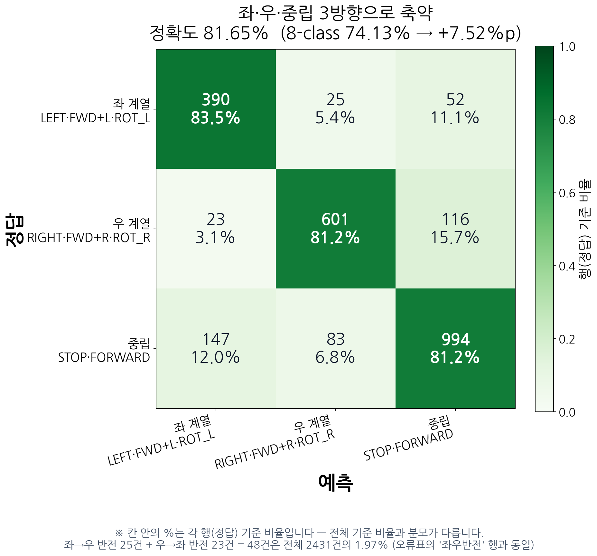

EdgeGround-VLA 모델 구조 & 학습 방식 정리
1. 추론 파이프라인
→ cx, cy, area, has_bbox
1024차원 → mean pool
+ L2 정규화 (Stage 2·배포 시엔 동결)
전체 흐름 — 다이어그램
위 블록도가 담지 못한 세 가지를 함께 표시합니다 — 텍스트가 들어가는 위치, 호출되지 않는 언어 디코더, 제어 계층의 되먹임(재검출).
flowchart TB CAM["카메라
720x1280 RGB"] subgraph PER["인지 — Perception"] direction TB TXT["텍스트 프롬프트
'gray basket'
런타임 불변 · 고정 상수"] OWL["OWL-v2 검출기
0.155B · 1902ms · zero-shot
학습 안 함"] KV["Kosmos-2 vision_model
0.303B · 54ms · frozen"] PRJ["image_proj
Linear 1024→256 + L2norm
0.262M · Stage 1 학습 후 동결"] end BB["bbox 4채널
cx, cy, area, has_bbox"] VIS["비전 피처 256채널"] CAT["프레임 특징 260-dim
window 6 → 1560-dim"] subgraph POL["정책 — Policy"] MLP["MLP 액션 헤드
1560→512→128→8
0.866M · Stage 2 학습 대상"] end ACT["8클래스 로짓
STOP · FWD · L · R
FWD+L · FWD+R · ROT_L · ROT_R"] XYZ["x, y, z (3-DoF)
ACTION_3D 룩업(LUT) — 클래스별 (lx, ly, az)"] RT["→ 런타임 파이프라인(⑦ Runtime)에서 계속
추론 제어(threshold·skip_n·회전규칙)·CAN·바퀴 전달은 별도 도표"] LM["Kosmos-2 언어 디코더 1.361B
호출 0회 · 로드도 제거함"] CAM --> OWL CAM --> KV TXT --> OWL OWL --> BB KV --> PRJ PRJ --> VIS BB --> CAT VIS --> CAT CAT -.-> MLP MLP -.-> ACT ACT -.-> XYZ XYZ -.-> RT KV -. "미사용" .-> LM classDef used fill:#0f2a1f,stroke:#2f7d5d,color:#dcfce7 classDef train fill:#123524,stroke:#4ade80,color:#dcfce7,stroke-width:2px classDef slow fill:#2b1010,stroke:#b45454,color:#fee2e2 classDef unused fill:#1a1a1a,stroke:#4b5563,color:#9ca3af,stroke-dasharray:4 3 classDef text fill:#2a1030,stroke:#a78bfa,color:#ede9fe classDef data fill:#111c2e,stroke:#334155,color:#cbd5e1 classDef out fill:#123524,stroke:#4ade80,color:#dcfce7,stroke-width:2px classDef note fill:#0d1117,stroke:#334155,color:#94a3b8,stroke-dasharray:4 3 classDef pretrained fill:#0f2a1f,stroke:#4ade80,color:#dcfce7,stroke-dasharray:2 2 class OWL slow class KV used class PRJ pretrained class MLP train class LM unused class TXT text class CAM,BB,VIS,CAT,ACT data class XYZ out class RT note
보라 = 텍스트 입력(고정 상수) · 빨강 = 지연 병목(전체의 97%) · 초록 굵은선 = Stage 2 학습 대상(행동 헤드) · 초록 점선 테두리 = Stage 1에서 학습 후 동결(image_proj) · 회색 점선 = 호출되지 않는 경로. 텍스트 관련 상세는 1-2절.
런타임 파이프라인 — 위 모델 파이프라인과의 차이
위 다이어그램은 한 번의 완전한 forward를 보여줍니다. 실제 운영에서는
grounding_skip_n=3이라 3번의 호출 중 1번만 이 전체 경로를
타고, 나머지 2번은 OWL-v2를 건너뛰고 Kosmos-2 비전만 다시 계산합니다(bbox는 직전 값 유지).
그리고 클래스 번호 이후 CAN 통신으로 바퀴에 전달되는 부분은
모델 파이프라인에 없던 하드웨어 경로입니다.
위 모델 파이프라인 도표에 있던 "제어 · SERVING CONTROL" 블록은
이 도표로 옮겼습니다 — 모델 구조와 런타임 동작은 별개 관심사이므로, 위 도표는
8클래스 로짓 출력에서 끝나고 threshold·skip_n·회전 규칙은 아래 도표 상단의
"추론 제어 파라미터 요약" 패널에 있습니다.

하드웨어 연결 구조 — Jetson ↔ CAN ↔ MCU
Jetson Orin NX가 인지·정책을 전담하고, 산출된 3자유도 속도 명령을 CAN 버스(can0,
500kbps)로 바퀴 제어 MCU 보드에 전달합니다. 같은 버스에 PSD·초음파 센서도 물려 있으나
본 VLA 파이프라인의 행동 입력에는 쓰이지 않습니다.

근거:
ROS_action/.../omni_controller/omni_drive_node.py의
Psd(dev="can0", bitrate=500000) ·
robovlm_nav/serve/vla_control_utils.py의 pop.driving.Driving()
프레임 특징 벡터 — 260차원
FRAME_DIM = 4 + 256 = 260 ├ bbox 4채널 : cx, cy, area, has_bbox ← OWL-v2 출력 (area는 bbox_scale=3.0 배율 적용) └ 비전 256채널: Kosmos-2 vision_model(1024) → image_proj → L2 normalize 헤드 입력 : window=6 프레임을 flatten → (6 × 260) = 1560차원 헤드 출력 : 8클래스 로짓
cx=0.5, cy=0.6,
area=0.06의 고정 fallback 값이 들어가고 has_bbox=0으로 표시됩니다.
즉 헤드는 "지금 타겟을 못 보고 있다"는 신호를 입력으로 받습니다.
그런데 학습 데이터에는 has_bbox=False 프레임이 0.00%(0/16,599)여서,
모델은 이 신호에 대응하는 법을 배운 적이 없습니다(CH64 64-15).
실기에서는 이를 학습이 아니라 추론 제어 로직으로 우회했습니다(4절).
액션 공간 — 3DOF 8클래스
| idx | 클래스 | 동작 | 학습 분포 |
|---|---|---|---|
| 0 | STOP | 정지 (에피소드 끝 프레임에 합성) | — |
| 1 | FORWARD | 직진 | 71~74% (최다) |
| 2 / 3 | LEFT / RIGHT | 횡이동(strafe) | — |
| 4 / 5 | FWD+LEFT / FWD+RIGHT | 대각 전진 | — |
| 6 / 7 | ROT_L / ROT_R | 제자리 회전 | 각 ~0.8% (극소) |
- 로봇 펌웨어는 속도 크기를 무시하고 방향만 사용합니다(상수속도 구조). 따라서 헤드가 8클래스 중 어느 방향을 고르는지가 전부이고, 세기 조절은 존재하지 않습니다.
- 추론 서버는 9클래스 매핑을 쓰지만 학습은 8클래스입니다 — 혼동 주의.
1-2. 텍스트 입력은 어디에 있는가 — 정리
"gray basket")라서,
지시문으로 로봇의 행동을 바꾸는 구조는 아닙니다. Kosmos-2의 언어 디코더는 호출되지 않습니다.
| 위치 | 텍스트가 들어가는가 | 실제로 쓰이는가 | 코드 |
|---|---|---|---|
| OWL-v2 검출기 | ✅ 들어감 | ✅ 실제 사용 텍스트 인코더가 "gray basket"을 받아검출 대상을 지정 |
phrase="gray basket"( OwlV2Grounder.run) |
| Kosmos-2 비전 인코더 | ⚠️ processor에는 전달됨 | ❌ 버려짐 모델 호출이 pixel_values만 받으므로토큰화만 되고 폐기 |
processor(text=GROUNDING_PROMPT, images=…)→ vision_model(pixel_values=pv) |
| Kosmos-2 언어 디코더 | ❌ 안 들어감 | ❌ 호출 0회 1.361B가 로드만 됨(현재는 로드도 제거) |
— |
| MLP 액션 헤드 | ❌ 안 들어감 | 입력은 260-dim 숫자 벡터 (비전 256 + bbox 4)뿐 |
FRAME_DIM = 4 + 256 |
즉 "언어가 입력이 아니라 설정값"입니다
텍스트가 파이프라인 안에 존재하기는 하지만, 사용자가 런타임에 지시문을 바꿔
행동을 바꾸는 조건화(language conditioning)는 하지 않습니다.
multi_prompt=False로 단일 쿼리만 쓰며, 값도 코드에 고정돼 있습니다.
그래서 엄밀히는 VLA가 아니라 "오픈 보캐블러리 객체 검출 + 액션 헤드"이고,
이것이 2026-07-23 미팅에서 모델 정의를 그렇게 바꾸기로 결정한 근거입니다.
왜 언어 경로를 쓰지 않게 됐는가 — 측정 결과 2건
| 근거 | 측정값 | 의미 |
|---|---|---|
| text attention = 0.000% (Exp17~41C 전 실험, per-layer 측정) |
0.000% | Google-robot post-training 단계에서 언어→비전 경로가 이미 붕괴. head-only 학습에서도 재현되어 우리 학습 탓이 아니라 모델 구조 기인으로 확정 |
| 프롬프트 어블레이션 (CH58 → CH59 재측정) |
검출률은 쿼리별 35~100%로 변함 |
텍스트가 "무엇을 찾을지" 지정하는 역할은 실제로 기능합니다 (쿼리에 따라 검출률이 바뀜). 다만 CH58의 "방향 정확도 0%"는 지표 결함이었고, CH59 사람 라벨 재측정에서 OWL-v2 L/R 99.1%로 정정됐습니다 — "텍스트로 방향을 못 잡는다"는 주장은 하지 않습니다. |
OWL-v2 채택 이후 "프롬프트를 런타임에 바꾸면 행동이 달라지는가"를 통제된 조건에서 실험한 적은 없습니다. 쿼리 변형 비교는 채택 이전 시점(CH58/59)이 마지막이고,
multi_prompt는 설정으로 존재하나 A/B로 검증하지 않았습니다.
따라서 현재 말할 수 있는 것은 "텍스트를 변수로 쓰지 않고 고정 상수로 운용한다"
까지이며, "텍스트가 행동에 영향을 못 준다"는 주장은 하지 않습니다
(그건 실험해야 알 수 있습니다).
2. 파라미터 — "0.46B"와 "1.8B"는 둘 다 맞습니다
이전 미팅에서 언급된 두 숫자가 서로 다른 것을 가리킵니다. 실측으로 정리하면:
| 구성요소 | 파라미터 | 추론에 사용 | 비고 |
|---|---|---|---|
Kosmos-2 vision_model | 303,179,776 | ✅ 사용 | frozen, 이미지 피처 추출 |
image_proj (1024→256) | 262,400 | ✅ 사용 | frozen (Stage1에서 학습됨) |
| OWL-v2 전체 | 154,966,792 | ✅ 사용 | zero-shot, 학습 안 함 |
| MLP 액션 헤드 | 865,928 | ✅ 사용 | Stage 2 학습 대상(image_proj와 합쳐 학습되는 전체는 1,128,328 ≈ 1.128M) |
| Kosmos-2 언어 디코더 외 | ~1361.3M | ❌ 미사용 | 로드만 되고 호출 0회 |
| 실제 연산에 쓰이는 합 | 459,274,896 (≈0.459B) | — | = 미팅에서 말한 "약 0.46B" — sum(p.numel() for p in model.parameters())로 실측(2026-08-19) |
| 로드 시 host RAM에 올라가는 합 | 1820.3M (1.820B) | — | = 미팅에서 말한 "약 1.8B" |
로드되는 1.82B 중 1.36B(74.8%)가 언어 디코더인데 단 한 번도 호출되지 않습니다. 기존 코드가
AutoModelForVision2Seq.from_pretrained()로 전체를
host RAM에 올린 뒤 .vision_model만 떼어 썼기 때문입니다. safetensors에서
vision_model.* 키만 읽어 비전 타워만 구성하도록 바꿨습니다
(_load_kosmos2_vision_only()).
| 지표 | 기존 | 적용 후 | 변화 |
|---|---|---|---|
| peak host RAM | 10.59GB | 3.20GB | −70% |
| GPU 메모리 | 0.607GB | 0.607GB | 변화 없음 |
| 출력 피처 | 실제 세션 프레임에서 bitwise 완전 동일 (최대차 0.000e+00, missing/unexpected 키 0) | ||
base가 지역변수라
.vision_model만 .to(device)). 실제 이득은 host RAM
쪽이고, RAM이 4~8GB인 보드에서는 이게 로드 가능/불가능을 가르는
차이입니다 — 기존 10.59GB로는 라즈베리파이에 아예 올라가지 않습니다.
따라서 이 변경은 "파라미터 절감"이 아니라 "타겟 하드웨어 진입 조건"으로
서술하는 것이 정확합니다.
안전장치 어떤 이유로든 실패하면 기존 전체 로드로 자동 폴백하며,
VLA_KOSMOS_VISION_ONLY=0으로 기존 경로를 강제할 수 있습니다.
레이턴시 — 병목은 검출기
| 단계 | 파라미터 | 지연 | 비율 |
|---|---|---|---|
| OWL-v2 그라운딩 (fp32) | 0.155B | 1901.7ms | ~97% |
| OWL-v2 그라운딩 (fp16) | 0.155B | 962.1ms | — |
| Kosmos-2 비전 인코딩 | 0.303B | 53.7ms | ~3% |
| MLP 헤드 | 0.866M | <1ms | ~0% |
파라미터 수와 속도가 역전되어 있습니다 — OWL-v2는 Kosmos-2 비전의 절반 크기인데 35배 느립니다. 따라서 "파라미터 수 줄이기"로는 경량화가 되지 않고, 검출 단계를 직접 손대야 합니다.
3. 학습 방식
하이퍼파라미터 요약 — 모델 구조·학습·서빙(런타임)으로 분리
owlv2_thresh와 num_classes처럼 값 자체가 핵심인 항목을
본문 산문에서 분리해 한 표로 모았습니다. 서빙 항목은 배포 시 환경변수로 바뀔 수 있어
학습 하이퍼파라미터와 구분합니다.
| 구분 | 항목 | 값 | 비고 |
|---|---|---|---|
| 모델 구조 | num_classes | 8 | STOP·FWD·LEFT·RIGHT·FWD+L·FWD+R·ROT_L·ROT_R |
| 모델 구조 | window | 6 (stride=1) | 배포 헤드는 프레임 단위(stride=1) 학습 — cadence-aligned(간격 5)는 별도 실험이며 배포본이 아님 |
| 모델 구조 | bbox_scale | 3.0 | bbox 4채널 전체에 적용(area만 아님). 2026-08-16 재검증: 현 파이프라인에선 성능 영향 거의 없음 — 아래 참조 |
| 학습 | optimizer | AdamW | lr 5e-4, weight_decay 1e-4 |
| 학습 | batch / epochs | 128 / 300 | |
| 학습 | 분할 시드 | 42 | 임의 고정값 — 전 실험 조건(condition)이 동일 val 집합 공유가 목적 |
| 서빙 | owlv2_thresh | 코드 기본 0.25 운영 0.20 | VLA_OWLV2_THRESH, 검증 상태는 4절 |
| 서빙 | grounding_skip_n | 3 | 실효 ≈1.3Hz |
| 서빙 | 콜드스타트 가드 | 3스텝 | window=6에서 파생 |
| 서빙 | 회전 자동정지 | 0.4초 | 제어 계층(vla_control_utils.py) |
학습되는 것 / 안 되는 것
| 모듈 | 상태 | 이유 |
|---|---|---|
| OWL-v2 | frozen (zero-shot) | 텍스트 프롬프트 "gray basket"로만 사용 |
| Kosmos-2 vision_model | frozen | 피처 추출기로만 사용 |
image_proj | Stage 1 학습 → 배포 시 frozen | 대조학습으로 직접 학습(0.262M), Stage 2·추론 시엔 동결 로드 |
| MLP 액션 헤드 | Stage 2 학습 | image_proj와 합쳐 전체 학습 파라미터는 1.128M(0.262M+0.866M), Stage 2만 보면 0.866M |
text_proj | Stage 1 학습 → 배포 미사용 | 5개 방향 문장을 256차원으로 투영하는 레이어. image_proj와 같은 optimizer로 함께 학습됩니다
(train_stage1_v3_5cls_owl.py). 다만 Stage 2·배포에서 로드하는 FrozenCLIPV2는
체크포인트에서 image_proj 키만 꺼내 쓰므로 실사용은 image_proj뿐입니다. |
| 언어 디코더 ( text_model) | 배포 시 미사용 | 런타임 서버 코드에 text_model 호출이 아예 없어 배포 호출 0회.
단 Stage 1 학습 중에는 호출됩니다 — 5개 앵커 문장을
forward(output_hidden_states=True)로 인코딩해 anchor 임베딩을 만드는 데 씁니다
(generate() 아님). 학습이 끝나면 이 임베딩이 고정값으로 저장되어 배포 시엔 다시 호출되지 않습니다. |
데이터셋 (V6)
| 항목 | 값 |
|---|---|
| 에피소드 | 225개 (트랙A 180 + 트랙F 45) |
| 총 프레임 | 16,599 |
| train / val | 192 / 33 (VAL_RATIO=0.15, SPLIT_SEED=42 고정) |
| 비전 캐시 | exp73_v6_vis_cache_stage1v3.pt (BGR→RGB 반전 + L2 정규화, 새 image_proj로 재인코딩) |
| bbox 주석 | bbox_dataset_v6_owl.json (OWL-v2 기반 — 배포 체크포인트 학습에 실제 사용) |
| 액션 분포 | STOP 8.75% · FORWARD 46.03% · LEFT 4.31% · RIGHT 5.17% · FWD+L 15.25% · FWD+R 18.78% · ROT_L 0.82% · ROT_R 0.89% |
관련해서 실제 사고가 한 번 있었습니다 — 전체 데이터 재학습판을 만들 때 학습 데이터 자체를 val로 써서 에폭을 고른 탓에 정확도가 94.5%로 부풀었고(정상 범위 75%), 별도 홀드아웃을 분리해 74.5%로 재학습해 교체했습니다.
학습 하이퍼파라미터 — Stage 2(행동 헤드)
window = 6 프레임 bbox_scale = 3.0 num_classes = 8 optimizer = AdamW, lr = 5e-4 epochs = 300 scheduler = CosineAnnealingLR class weight = 1/빈도 정규화 ← FORWARD 46.03%(7,641/16,599) 편중 보정 seeds = 0, 1, 2 (다중 시드로 분산 확인)
학습 하이퍼파라미터 — Stage 1(image_proj 사전학습)
Stage 2와 완전히 분리된 별도 학습(1.1절) — 데이터·클래스·하이퍼파라미터 전부 다름.
epochs = 30 batch size = 16 optimizer = AdamW, lr = 3e-4 scheduler = CosineAnnealingLR temperature = 0.07 (대조학습) num_classes = 5 (강좌/약좌/중앙/약우/강우) class weight = strong_L 0.91 · weak_L 1.00 · center 1.17 · weak_R 1.01 · strong_R 0.91 검증 분할 = 에피소드 단위 20%, seed 42
cadence-aligned 학습 — 실서빙 주기를 학습에 반영
그라운딩이 ~2초 걸려서 실기 판단 주기는 6Hz가 아니라 약 1.3Hz이고, 그 사이 로봇은 직전 명령을 그대로 유지합니다(zero-order hold). 매 프레임 재판단을 가정한 학습과 이 조건은 어긋납니다. 그래서 stride=5마다 한 번만 판단하고, 라벨은 그 5프레임 구간의 다수결로 주는 방식으로 학습했습니다.
| 학습 방식 | HELD 조건 평가 |
|---|---|
| 연속(매 프레임) 학습 | 7.1 ± 3.8% |
| stride5 입력만 적용 | 24.2 ± 2.5% |
| cadence-aligned (구간 majority-vote 라벨) | 28.3 ± 3.8% |

원본: CH64 64-12, 3 seed 에러바. 그라운더를 OWL-v2로 바꿔도 HELD 25.3±3.8%로 재현되어 그라운더 종속 결과가 아님을 확인. 단 이 28.3%도 baseline의 순수 offline 수치(39~48%대)에는 크게 못 미쳐 — cadence-aligned는 근본 해결책이 아니라 재수집 없이 얻는 저비용 완화책입니다.
cadence-aligned가 정확히 무엇을 바꾸는가 — 세 가지가 함께 바뀝니다
위 ablation에서 입력만 stride5로 바꾸면 24.2%인데 라벨까지 구간 다수결로 바꾸면 28.3%가 됩니다. 즉 이 방식은 하나의 트릭이 아니라 표집 간격 · 윈도우 구성 · 라벨 정의 세 가지가 동시에 바뀌는 것이고, 각각이 다른 문제를 겨냥합니다.
결정 시점 t = 0, 5, 10, … 에서만 샘플을 만듭니다.
16,599 프레임 → 3,401 샘플 (4.88배 감소).
인접 프레임은 거의 동일한 관측이라, 프레임 단위 학습은 표본을 늘리는 대신 같은 장면을 5번씩 반복하게 됩니다. 특히 변화가 거의 없는 긴 직진 구간이 과대 대표되어, 직진 편중(46%)을 더 키웁니다.
윈도우의 6개 시점도 같은 간격으로 취합니다.
idx = t − (window−1−k) × stride → t−25, t−20, t−15, t−10, t−5, t
즉 6개 입력이 25프레임 구간에 걸쳐 있습니다. 연속 6프레임을 쓰면 프레임 간 변화가 작아 시간 정보가 사실상 중복되는데, 간격을 두면 같은 6개 입력으로 훨씬 긴 구간의 변화를 담을 수 있습니다.
에피소드 앞부분에서 음수 인덱스는 0으로 클램프되어 첫 프레임이 반복 입력됩니다 → 이 구간의 오작동을 막는 장치가 콜드스타트 가드 3회입니다(4절). 즉 그 값은 임의 상수가 아니라 이 구조에서 파생된 것입니다.
③ 라벨 정의 — "지금"이 아니라 "다음 판단까지"
결정 시점 t의 라벨은 그 순간의 행동이 아니라
구간 [t, t+5)에서 조작자가 취한 행동의 다수결입니다.
학습 목표가 "지금 무엇을 하고 있나"에서
"다음 판단까지 무엇을 유지할 것인가"로 바뀝니다 — 행동이 일정 시간 유지되는
운영 구조와 정합합니다. ablation의 +4.1%p가 이 변경의 몫입니다.
그래서 라벨이 실제로 얼마나 바뀌는가 — 데이터에서 직접 세었습니다.
| 항목 | 값 | 해석 |
|---|---|---|
| 다수결 ≠ 순간 라벨 | 10.56% 359 / 3,401 |
결정 시점 10개 중 1개가 순간 행동과 다른 라벨을 받습니다. 이 10.56%가 곧 "구간을 보고 라벨을 정한다"의 실질적 크기입니다 |
| 동표 발생 | 0.71% 24 / 3,401 |
구현이 bincount().argmax()여서 동표 시 최소 클래스 인덱스가
이깁니다. 클래스 0이 STOP이라 정지 편향을 의심했으나, 빈도가 0.71%로 낮아 영향은
무시할 수준입니다 |
| 동표 시 선택된 클래스 | FWD 13 · LEFT 5 RIGHT 4 · FWD+L 2 |
STOP이 선택된 경우는 0건 — 정지 쪽 편향 우려는 관측되지 않았습니다 |
클래스 분포 변화 — 편중이 미세하게 완화되지만 좌우 불균형은 그대로입니다.
| 클래스 | 프레임 단위 | 다수결 | 변화 |
|---|---|---|---|
| STOP | 8.75% | 10.35% | +1.60%p |
| FORWARD | 46.03% | 44.90% | −1.13%p |
| ROT_L / ROT_R | 0.82 / 0.89% | 1.00 / 1.15% | +0.18 / +0.26%p |
| 좌계열 / 우계열 | 20.39% / 24.83% | 20.14% / 24.61% | 격차 4.45 → 4.47%p |
학습 윈도우는 5프레임 간격으로 표집되는데, 추론 서버는 히스토리 버퍼의 연속된 6개 항목을 사용합니다(
_build_seq_feature_trans).
운영에서는 한 항목이 한 번의 추론 호출에 대응하고 그라운딩 지연이 커서 실제 시간 폭이
학습 쪽과 비슷할 가능성이 있습니다 — 실제로 세션 76건에서
cached 비율 65.1%가 측정되어 skip_n=3의 기대치 66.7%와
일치하므로 zero-order hold는 확인됩니다.
그러나 프레임 타임스탬프로 시간 폭을 직접 비교한 바는 없습니다. 따라서 "학습과 운영의 시간 폭이 일치한다"고 단정할 수 없고, 검증 항목으로 남깁니다. 이는 2026-07-07의
vis_feat 정규화 불일치, bbox_scale 불일치와
같은 종류의 위험입니다.
scripts/analyze_hold_aware_labeling.py ·
결과 docs/v5/detector/hold_aware_labeling.json ·
구현 scripts/exp73_held_aware_train.py의
build_windows_hold_aware() / majority()
bbox_scale 재검증 (2026-08-16) — 현 파이프라인에선 무영향
과거 exp71(PG2 그라운더 + Transformer 헤드)에서 bbox_scale 3.0이
정확도를 크게 끌어올린다고 보고했으나(72%→85%), 현재 배포 구성과 동일한 조건
(exp73 · OWL-v2 · MLP 헤드 · stride=1 · 같은 캐시/분할)에서 1.0/2.0/3.0을 3-seed로 재검증한 결과
차이가 오차범위 안이었습니다.

| bbox_scale | val acc (3-seed) | FWD+L recall | FWD+R recall |
|---|---|---|---|
| 1.0 | 73.8% ± 0.2%p | 72.3% | 71.5% |
| 2.0 | 74.2% ± 0.2%p | 72.6% | 73.8% |
| 3.0 (배포값) | 73.8% ± 0.2%p | 72.5% | 72.2% |
해석 주의 — 옛 결과가 틀렸다는 뜻이 아니라, 그라운더(PG2→OWL-v2)와 헤드(Transformer→MLP)가 모두 바뀐 다른 구성이었다는 뜻입니다. 현재 3.0을 쓰는 이유는 성능 이득이 아니라 배포 체크포인트가 그 값으로 학습됐기 때문이며, 학습·추론 값이 어긋나면 안 되므로 체크포인트 메타데이터에서 직접 읽어 씁니다.
참고 — bbox_scale은 화면에 그려지는 검출 박스의 픽셀 크기와 무관합니다.
0~1로 정규화된 bbox 4채널 값 자체에 곱하는 입력 특징 스케일링이며,
L2 정규화된 256차원 비전 특징과 크기를 맞추려는 조정입니다.
논문 도판 — 최종본
KCI 초안에 싣는 확정 도판입니다. 이 페이지의 설명과 동일한 구조를 논문 형식으로 정리한 것으로, 수정사항 브리핑에서 Figure별 이력을 추적합니다.

인지(OWL-v2 · Kosmos-2 vision · image_proj) → 260차원 프레임 특징 → 슬라이딩 윈도우 1560차원 → MLP 헤드 → 8-class → LUT로 (x,y,z).

Stage 1은 프레임 1장 단위 대조학습(image_proj + text_proj), Stage 2는 6-프레임 슬라이딩 윈도우로 MLP 헤드 학습. 사이에 Vision Feature Cache가 있습니다.
4. 추론 제어 로직 — 학습으로 못 고친 걸 여기서 막습니다
2절에서 말한 "has_bbox=False를 학습한 적이 없다"는 구조적 결함을, 재학습이 아니라 제어 계층에서 우회했습니다. 현재 적용 중인 설정:
| 설정 | 역할 |
|---|---|
owlv2_thresh = 0.20 | 검출 임계값 (0.25에서 하향 — 실측 검출률 1.71배) |
grounding_skip_n = 3 | 3프레임마다 1회만 신선 그라운딩(속도 타협, 실효 ≈1.3Hz) |
| 회전 0.4초 후 자동정지 (제어 계층) | 회전 폭주 방지 —
제어 루프가 명령을 COAST 4.0s·10Hz로 반복 발행하는데 회전만 예외로
move_and_stop_ramped(move_duration=0.4). 예외가 없으면 그라운딩 ~2초 동안
같은 회전이 계속 재발행돼 타겟이 화면 밖으로 밀려남(2026-07-30) |
| 회전 직후 강제 재검출 (추론 서버, 상시) | just_rotated면 skip_n 무시하고 재검출 |
| 연속 회전 차단 (추론 서버, 상시) | 두 번째 회전은 실행하지 않고 정지 명령으로 대체 |
force_reground_on_miss (기본 off) |
A/B 테스트용 선택 항목 — 상시 규칙이 아님 |
stop_mode = learned (실제 실행 설정) |
실기/실험에 쓴 실행 스크립트(scripts/run/go.sh)가
VLA_STOP_MODE=learned로 명시 오버라이드 — 행동 헤드가 STOP
클래스를 직접 예측. 코드 자체의 인자 기본값은 proximity
(area≥0.25·|cx−0.5|≤0.35·3프레임 근접)이지만 배포 시 항상 learned로 덮어써서 사용함.
콜드스타트 가드 3프레임과 함께 초기 오판 방지 |
5. 실기 결과와 핵심 발견
그라운딩 성공률 — threshold 곡선

사람 라벨 296프레임(목표 있음 217·없음 79) 기준. threshold 0.25에서 오탐률 0%, 정탐률 94.9%. 0.20으로 낮추면 정탐 97.2%지만 오탐 12.7%가 발생.
행동 헤드 — val 혼동행렬

배포 헤드(exp73_owl_stage1v3_v6_mlp.pt, OWL-v2)를
학습과 동일한 stride=1 방식으로 채점한 결과 val 정확도 74.1%(n=2,431)로,
체크포인트에 저장된 값(74.13%)과 일치한다. 표본이 충분한 6개 클래스는 66.7~84.5%로 고르게 분포하며
특정 클래스가 붕괴한 것이 아니다. ROT_L·ROT_R만 낮게 나오는데, 두 클래스는 val 2,431개 중
28개(1.15%)뿐이라 오분류 한두 건이 정확도를 크게 흔든다.
scripts/eval_confusion_matrix_stage1v3_correct.py로 재채점해 74.1%로 교체.
오류를 심각도로 분해 (2026-08-19 추가)


오류 629건을 성격별로 나누면 81.4%가 "같은 방향 성향 내 혼동"(대체 가능한 행동)이고,
실제로 주행을 실패시키는 좌우 반전은 전체의 1.97%(48건)뿐이다. 좌·우·중립 3방향으로
축약하면 정확도는 74.13%→81.65%(+7.52%p)로 오른다. val 프레임 단위 정확도가
실기 성공률(95%)보다 낮게 보이는 이유를 뒷받침하는 근거 — 프레임 단위 채점은 폐루프 재정정 기회를
반영하지 못한다(scripts/plot_action_head_error_severity.py).
image_proj(Stage 1) 학습 곡선


train 96.10% / val 94.09%(격차 2.01%p), train loss 0.107 / val loss 0.173 — 둘 다 함께
수렴해 과적합 징후가 없다. Stage 2(행동 헤드)의 17.40%p 격차와 대조되는 지점으로, 과적합이
파이프라인 전체가 아니라 Stage 2에 국한된 현상임을 보여준다(scripts/train_stage1_v3_5cls_owl_fastloss.py,
비전 특징 캐싱으로 재학습 277분→21.8분 단축).
| 목표 위치 | 성공률 |
|---|---|
| ● 중앙 | 20/20 (100%) |
| ▶▶ 강우 | 19/20 (95%) |
| ◀◀ 강좌 | 19/20 (95%) |
| ◀ 약좌 | 19/20 (95%) |
| ▶ 약우 | 18/20 (90%) |
| 전체 | 95/100 (95.0%) |
| 조건 | 주행 성공률 |
|---|---|
| 세션 내 검출 성공률(gnd%) ≥ 80% | 79/80 = 98.8% |
| gnd% < 80% | 41/80 = 51.2% |
status 전량 manual_stop)
이 상관관계를 그 배치로 재계산할 수 없다. 다만 08-07 배치의 그라운딩 가용률 자체는 실측되며
985/1088 프레임 = 90.5%다.
타겟을 계속 보고만 있으면 거의 반드시 도달하고,
실패는 전부 "보지 못한" 경우입니다. 따라서 0.866M짜리 MLP 헤드는 이미 충분하며,
자원을 투입할 곳은 검출 단계입니다.
실패의 정체 — "안 보인다"가 아니라 "경계에 걸린다"
미검출 프레임 197장을 로컬에서 재실행해 confidence를 확인했습니다:
| 로컬 score | 해석 | 비중 |
|---|---|---|
| < 0.01 | 타겟이 화면에 없음 | 2.5% |
| 0.01 ~ 0.10 | 매우 낮음 | 21.3% |
| 0.10 ~ 0.20 | 보이지만 임계값 바로 아래 — 지배 구간 | 54.8% |
| ≥ 0.20 | 로컬은 검출 (환경차) | 21.3% |
즉 실패의 절반 이상이 타겟이 보이는데도 confidence가 0.10~0.20에 걸리는 경우입니다. 임계값을 0.15로 더 내려도 추가 회수는 +24.9%p인데 오탐이 0%→40.5%로 급증해 0.20이 적정선입니다.
6. 다음 단계 제안
언어 디코더 로드 제거— 2026-08-01 적용 완료(1.82B → 0.46B, −74.8%). 2절 참조.- 도메인 특화 소형 검출기 직접 학습 — 범용 OWL-v2(1902ms)를 양자화로 깎는 방식은 부적절합니다. fp16은 1.98배 빨라지지만 검출률이 10%p 떨어지고, 위 발견대로 검출률이 곧 성공률이므로 성패를 가르는 변수를 팔아 속도를 사는 셈입니다. 우리 과제는 대상이 "회색 바구니" 하나로 고정되어 있어, 특화 검출기를 직접 학습하는 쪽이 속도·정확도 양쪽에서 유리합니다.
- has_bbox=False 상황 시범 데이터 수집 — 현재 0.00%인 미검출 상황에 사람이 정답 행동(탐색 회전/정지)을 시범해 학습에 포함. 지금은 제어 로직으로 우회 중인 부분을 모델이 직접 처리하게 함.
- 동일 위치 A/B 재측정 — 89% → 95% 개선이 체크포인트 교체 때문인지 임계값+제어로직 때문인지 아직 확정하지 못했습니다(두 변경이 서로 다른 위치에서 이뤄져 교란).
- 미검증 3항목 —
grounding_skip_n민감도 곡선(왜 3인가), threshold 0.20 vs 0.25 실기 A/B, 실패 5건 원인 분해. 셋 다 아직 근거가 없어 메인 페이지 Future Work에 미검증으로 명시해뒀습니다.
7. RoboVLMs와의 관계 — "참고했으나 코드는 쓰지 않음"
자주 나오는 질문이라 코드 레벨로 확인한 결과를 정리합니다. 현재 95% 모델의 실행 경로에는 RoboVLMs 코드가 한 줄도 없습니다.
RoboVLMs를 실제로 import하는 파일 — 구(舊) 파이프라인 2개뿐
| 파일 | import 내용 | 현재 사용 |
|---|---|---|
robovlm_nav/train.py | robovlms.data, robovlms.model.policy_head, RoboKosMos | ❌ V5 시절 LoRA 학습용 |
robovlm_nav/serve/inference_server.py | MobileVLATrainer, RoboKosMos | ❌ 구 9클래스 서버 |
현재 파이프라인 — 전부 무관
| 단계 | 파일 / 가중치 | RoboVLMs |
|---|---|---|
| 서빙 | serve/stage2_v2_inference_server.py 위 구 서버와 다른 파일 | 없음 |
| 헤드 학습 | train_exp73_trackA_heads.py, exp73_held_aware_train.py | 없음 |
| Stage1 proj 학습 | train_exp54_stage1_v2_frame_level.py (순수 HF AutoModelForVision2Seq) | 없음 |
| 비전 가중치 | .vlms/kosmos-2-patch14-224 — 순수 HuggingFace Kosmos-2 | 없음 |
가중치 계보도 없습니다 — RoboVLMs로 post-train된
kosmos_ph_google-robot-post-train.pt는 현재 파이프라인에서 참조 0건입니다.
- 프로젝트 초기 V5는 실제로 RoboVLMs 기반이었습니다 — Kosmos-2 + LoRA를
robovlm_nav/train.py로 학습했고, 그 경로에서 text attention이 0.000%로 측정되는 문제를 만나 현재 구조(언어 경로 배제 + 외부 검출기)로 이탈했습니다. - 패키지명
robovlm_nav/자체가 그 시절의 유산입니다. - ablation 헤드가 명시적으로 RoboVLMs 스타일을 참조합니다 —
train_exp54_stage2_v2_action.py에 "RoboVLMs FCDecoder / MLPNohHead 스타일", "RoboVLMs MobileVLAClassificationDecoder 스타일"이 비교 대상으로 구현돼 있습니다(배포된 것은mlp).
부록 — 배포 체크포인트 이력
세션 파일 메타데이터(runtime_config)로 복원한 실제 배포 이력입니다.
| 최초 관측 | 헤드 | 체크포인트 | 검출기 |
|---|---|---|---|
| 2026-07-06 | Transformer | exp71_window6/action_transformer.pt | OWL-v2 |
| 2026-07-10 | Transformer | exp71_window3_bboxscale3/action_transformer.pt | OWL-v2 |
| 2026-07-23 17:18 | MLP | exp73_pg448_trackF_v6_mlp_holdaware_seed0.pt | OWL-v2 |
| 2026-07-23 18:05 ~ 2026-08-07 | MLP | exp73_owl_trackF_v6_mlp_holdaware_seed0.pt | OWL-v2 |
| 2026-08-07 ~ 현재 | MLP + image_proj(5-class) | exp73_owl_stage1v3_v6_mlp.pt + stage1_v3_5cls_owl_projs.pt | OWL-v2 |
image_proj·행동 헤드를 함께 재학습해 2026-08-07 배포 전환. 실기 100건 재검증
95/100 — episode_log.csv의
runtime_config.stage1_path/checkpoint_path로 확인.
이전 체크포인트는 runs/v5_nav/mlp/shared/stage1_v2_projs.pt에 롤백용으로 보존.
third_party/RoboVLMs와 무관한 자체 구현입니다
(TransformerActionHead: nn.TransformerEncoder, d_model=260, nhead=4,
num_layers=2). 서빙 코드에 RoboVLMs import은 없고, RoboVLMs는 손대지 않은 상태로 남아있으며
현재 파이프라인에 포함되지 않습니다. 두 헤드 모두 프레임당 입력은 260차원으로 동일하고,
window만 3(구) / 6(현재)으로 다릅니다.
근거 상세: CH64
— 64-13(파라미터·레이턴시), 64-15(has_bbox 미학습), 64-17(임계값 ROC),
64-18(100회 결과), 64-19(요인 분해·배포 이력), 64-20(미검출 정밀 분석).
이 문서의 모든 수치는 코드/체크포인트/세션 메타데이터에서 직접 측정했으며,
과거 발표에서 철회·정정한 항목은 본문에 명시했습니다.